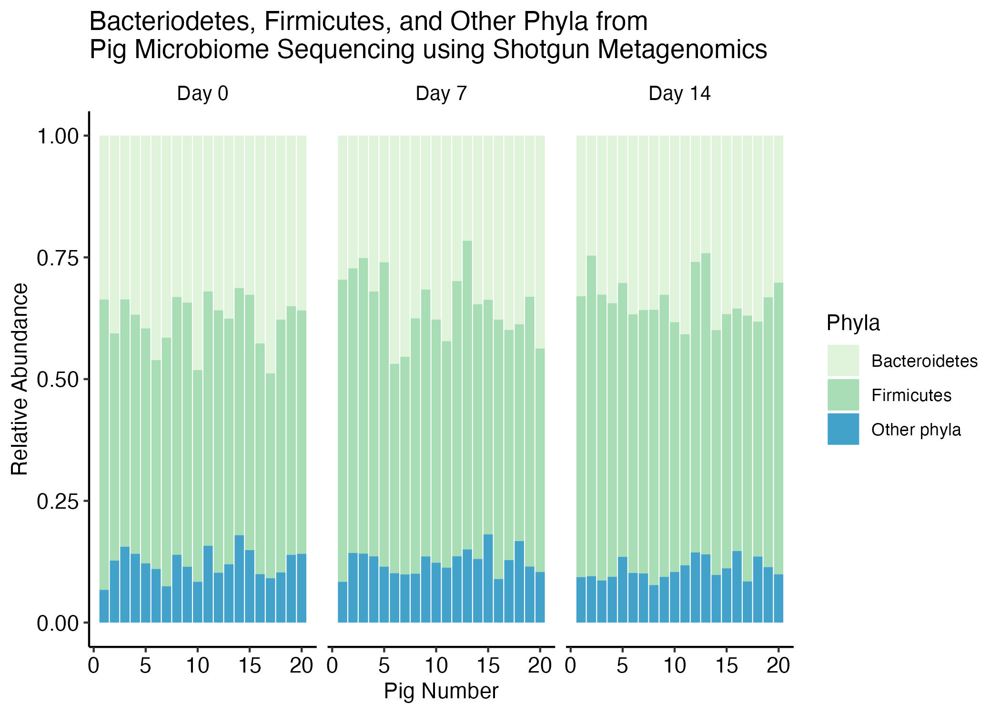

Interactive plots with plotly recitation solutions
Introduction
Today we are going to work with microbiome data. In this recitation we are going to provide microbiome data as the result of the shotgun sequencing of the pig gut microbiome.
Pig gut microbiome data
The goal of this recitation is to replicate the following plot, which expresses the relationship between the Bacteroidetes and Firmicutes while the rest of the Phyla levels were assigned to others.
Load the packages we will use
library(tidyverse)
library(plotly)How many rows and columns does the data have?
pig_micro <- read_csv("data/Phyla_RelAbund_Final_Filtered_WithMetadata.csv")
dim(pig_micro)[1] 60 50The data contains 60 rows and 50 columns
How many phyla does the data contains and how many columns represents metadata of the experiment?
glimpse(pig_micro)Rows: 60
Columns: 50
$ Sample_Name <chr> "ShotgunWGS-ControlPig6G…
$ Pig <dbl> 6, 8, 3, 14, 5, 18, 16, …
$ Diet <chr> "Control", "Control", "C…
$ Time_Point <chr> "Day 14", "Day 0", "Day …
$ Diet_By_Time_Point <chr> "Control Day 14", "Contr…
$ Acidobacteria <dbl> 0.000741000, 0.000885000…
$ Actinobacteria <dbl> 0.04813358, 0.06598073, …
$ Apicomplexa <dbl> 5.95e-05, 9.14e-05, 4.92…
$ Aquificae <dbl> 0.000503, 0.000537, 0.00…
$ Ascomycota <dbl> 0.000384000, 0.000523000…
$ Bacillariophyta <dbl> 2.71e-05, 4.38e-05, 3.34…
$ Bacteroidetes <dbl> 0.3670956, 0.3312767, 0.…
$ Basidiomycota <dbl> 6.18e-05, 9.64e-05, 5.13…
$ `Candidatus Poribacteria` <dbl> 6.70e-06, 1.17e-05, 5.44…
$ Chlamydiae <dbl> 0.000142, 0.000197, 0.00…
$ Chlorobi <dbl> 0.001259844, 0.001445895…
$ Chloroflexi <dbl> 0.002020802, 0.002288481…
$ Chlorophyta <dbl> 9.53e-05, 1.36e-04, 9.38…
$ Chrysiogenetes <dbl> 8.53e-05, 9.90e-05, 7.02…
$ Crenarchaeota <dbl> 0.000167, 0.000215, 0.00…
$ Cyanobacteria <dbl> 0.002277461, 0.003240824…
$ Deferribacteres <dbl> 0.000385, 0.000475, 0.00…
$ `Deinococcus-Thermus` <dbl> 0.000639000, 0.000854000…
$ Dictyoglomi <dbl> 0.000314000, 0.000370000…
$ Elusimicrobia <dbl> 0.000163, 0.000240, 0.00…
$ Euryarchaeota <dbl> 0.003395060, 0.004565534…
$ Fibrobacteres <dbl> 0.001228664, 0.001657792…
$ Firmicutes <dbl> 0.5308271, 0.5293436, 0.…
$ Fusobacteria <dbl> 0.003955535, 0.005057419…
$ Gemmatimonadetes <dbl> 5.44e-05, 8.09e-05, 6.24…
$ Hemichordata <dbl> 6.70e-06, 4.29e-06, 4.14…
$ Korarchaeota <dbl> 1.93e-05, 2.31e-05, 1.35…
$ Lentisphaerae <dbl> 0.000197000, 0.000436000…
$ Microsporidia <dbl> 1.26e-05, 2.10e-05, 1.45…
$ Nanoarchaeota <dbl> 1.03e-06, 1.19e-06, 1.04…
$ Nematoda <dbl> 4.59e-05, 6.31e-05, 3.78…
$ Nitrospirae <dbl> 0.000142, 0.000190, 0.00…
$ Placozoa <dbl> 1.75e-05, 1.62e-05, 8.03…
$ Planctomycetes <dbl> 0.00039200, 0.00062700, …
$ Proteobacteria <dbl> 0.02713703, 0.03683140, …
$ Spirochaetes <dbl> 0.002968326, 0.004157693…
$ Synergistetes <dbl> 0.001147492, 0.001783025…
$ Tenericutes <dbl> 0.000712000, 0.000888000…
$ Thaumarchaeota <dbl> 1.44e-05, 1.90e-05, 1.53…
$ Thermotogae <dbl> 0.001292056, 0.001691600…
$ Verrucomicrobia <dbl> 0.000827000, 0.001495655…
$ `unclassified (derived from Bacteria)` <dbl> 0.000308, 0.000410, 0.00…
$ `unclassified (derived from Eukaryota)` <dbl> 0.000325000, 0.000997000…
$ `unclassified (derived from Viruses)` <dbl> 0.000398000, 0.000625000…
$ `unclassified (derived from other sequences)` <dbl> 1.24e-05, 7.86e-06, 1.61…The first 5 rows represents metadata:
Sample_NamePigDietTime_PointDiet_By_Time_Point
The remainder of the columns represent the different phyla level annotation.
Computing the cumulative abundance for other phylum
Create a new column with a new phyla assignation
Keep the phyla level when they are Firmicutes or Bacteroidetes, otherwise assign Phyla to “Other level”.
Hint: You may need to pivot the data to evaluate the column names as observations
Here, we are creating a new column called Simplified_Phyla where if the Phyla is Bacteriodetes or Firmicutes, we specify the value that currently exists in Phyla, and if its not, then we specify to give the value “Other phyla”.
We can do this with if_else().
pig_micro |>
pivot_longer(
# select all the phyla columns
cols = Acidobacteria:`unclassified (derived from other sequences)`,
values_to = "Abundance",
names_to = "Phyla") |>
mutate(Simplified_Phyla = if_else(condition = Phyla %in% c("Bacteroidetes", "Firmicutes"),
true = Phyla,
false = "Other phyla")) |>
head()# A tibble: 6 × 8
Sample_Name Pig Diet Time_Point Diet_By_Time_Point Phyla Abundance
<chr> <dbl> <chr> <chr> <chr> <chr> <dbl>
1 ShotgunWGS-ControlP… 6 Cont… Day 14 Control Day 14 Acid… 0.000741
2 ShotgunWGS-ControlP… 6 Cont… Day 14 Control Day 14 Acti… 0.0481
3 ShotgunWGS-ControlP… 6 Cont… Day 14 Control Day 14 Apic… 0.0000595
4 ShotgunWGS-ControlP… 6 Cont… Day 14 Control Day 14 Aqui… 0.000503
5 ShotgunWGS-ControlP… 6 Cont… Day 14 Control Day 14 Asco… 0.000384
6 ShotgunWGS-ControlP… 6 Cont… Day 14 Control Day 14 Baci… 0.0000271
# ℹ 1 more variable: Simplified_Phyla <chr>Or with case_when().
pig_micro |>
pivot_longer(
# select all the phyla columns
cols = Acidobacteria:`unclassified (derived from other sequences)`,
values_to = "Abundance",
names_to = "Phyla") |>
mutate(Simplified_Phyla = case_when(Phyla == "Bacteroidetes" ~ Phyla,
Phyla == "Firmicutes" ~ Phyla,
# .default = "Other phyla")) |> # use this if you have a newer version of R
TRUE ~ "Other phyla")) |>
head()# A tibble: 6 × 8
Sample_Name Pig Diet Time_Point Diet_By_Time_Point Phyla Abundance
<chr> <dbl> <chr> <chr> <chr> <chr> <dbl>
1 ShotgunWGS-ControlP… 6 Cont… Day 14 Control Day 14 Acid… 0.000741
2 ShotgunWGS-ControlP… 6 Cont… Day 14 Control Day 14 Acti… 0.0481
3 ShotgunWGS-ControlP… 6 Cont… Day 14 Control Day 14 Apic… 0.0000595
4 ShotgunWGS-ControlP… 6 Cont… Day 14 Control Day 14 Aqui… 0.000503
5 ShotgunWGS-ControlP… 6 Cont… Day 14 Control Day 14 Asco… 0.000384
6 ShotgunWGS-ControlP… 6 Cont… Day 14 Control Day 14 Baci… 0.0000271
# ℹ 1 more variable: Simplified_Phyla <chr>Compute the cumulative abundance by the new Simplified_Phyla levels that you created
We want to have a summary that has the relative abundance of each of the Simplified_Phyla for each pig.
pig_clean <- pig_micro |>
pivot_longer(
# select all the phyla columns
cols = Acidobacteria:`unclassified (derived from other sequences)`,
values_to = "Abundance",
names_to = "Phyla") |>
mutate(Simplified_Phyla = if_else(condition = Phyla %in% c("Bacteroidetes", "Firmicutes"),
true = Phyla,
false = "Other phyla")) |>
group_by(Sample_Name, Simplified_Phyla, Time_Point, Pig) |>
summarise(Abundance = sum(Abundance))
head(pig_clean)# A tibble: 6 × 5
# Groups: Sample_Name, Simplified_Phyla, Time_Point [6]
Sample_Name Simplified_Phyla Time_Point Pig Abundance
<chr> <chr> <chr> <dbl> <dbl>
1 ShotgunWGS-ControlPig10GutMicrobi… Bacteroidetes Day 0 10 0.481
2 ShotgunWGS-ControlPig10GutMicrobi… Firmicutes Day 0 10 0.435
3 ShotgunWGS-ControlPig10GutMicrobi… Other phyla Day 0 10 0.0839
4 ShotgunWGS-ControlPig10GutMicrobi… Bacteroidetes Day 14 10 0.383
5 ShotgunWGS-ControlPig10GutMicrobi… Firmicutes Day 14 10 0.513
6 ShotgunWGS-ControlPig10GutMicrobi… Other phyla Day 14 10 0.104 Create the base bar plot with ggplot
First some wrangling.
# what are the time points called again?
unique(pig_clean$Time_Point)[1] "Day 0" "Day 14" "Day 7" # make Time_Point a factor so the faceting goes Day 0, Day 7, Day 14
# instead of putting Day 14 in the middle
pig_clean$Time_Point <- as.factor(pig_clean$Time_Point)
# set levels to be the order we want
pig_clean$Time_Point <- factor(pig_clean$Time_Point,
levels = c("Day 0", "Day 7", "Day 14"))Then plot.
stack_barplot <- pig_clean |>
ggplot(aes(x = as.numeric(Pig), y = Abundance, fill = Simplified_Phyla,
# set text to specify hover test
text = glue::glue("{Simplified_Phyla}: {round(Abundance, 3)*100}%"))) +
geom_col() +
scale_fill_brewer(palette = "GnBu") +
facet_wrap(vars(Time_Point)) +
theme_classic() +
labs(y = "Relative Abundance",
fill = "Phyla",
x = "Pig Number",
title = "Bacteriodetes, Firmicutes, and Other Phyla from \nPig Microbiome Sequencing using Shotgun Metagenomics") +
theme(panel.grid = element_blank(),
axis.text = element_text(color = "black", size = 11),
strip.text = element_text(color = "black", size = 10),
strip.background = element_blank())
stack_barplot
Make the plot interactive
ggplotly(stack_barplot,
tooltip = "text") |>
layout(margin = list(t = 100)) # for increasing the padding around the title